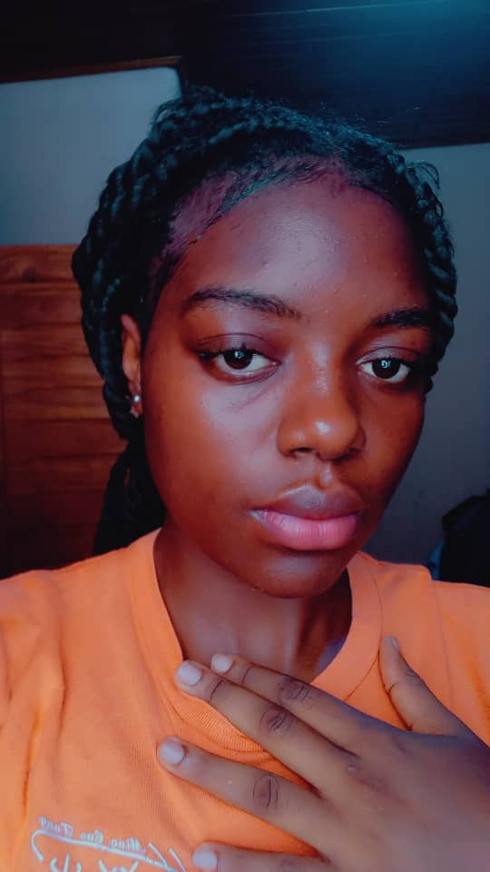

DJUINE TEYEDOUM
MICHELLE BRENDA
ETUDIANTE EN INFORMATIQUE
CONTACT
- E-mail:bteyedoum@gmail.com
- Telephone:687-21-60-53
PROFIL
Etudiante en première annee de licence informatique,
passionnee par le developpement logiciel et les nouvelles
technologies. A la recherche d'un stage ou d'une experiennce
pratique pour mettre en application mes connaissances
theorique et developper mes competences en programmation .
COMPETENCES TECHNIQUES
- connaissances en haskell, algorithmique, resolution de
probleme, travail en equipe
- connaissances en langages python, HTML/CSS, debut en
C et java LI>c
|
EXPERIENCE SCOLAIRRE
formation en cours
- formation en bureatique
- licence informatique-universite de douala
- cours suivis: algorithmique,programmationen Html/css,systeme d'exploitation
projets personnel
site web personnel
- creation d'une page web simple presentant mon profil et mes centres d'interet
QUALITES PERSONNELLES
- motive et determiner
- capacite d'adaptation rapide
- exprit d'equipe
LANGUES
- francais:courant
- anglais: notion
|